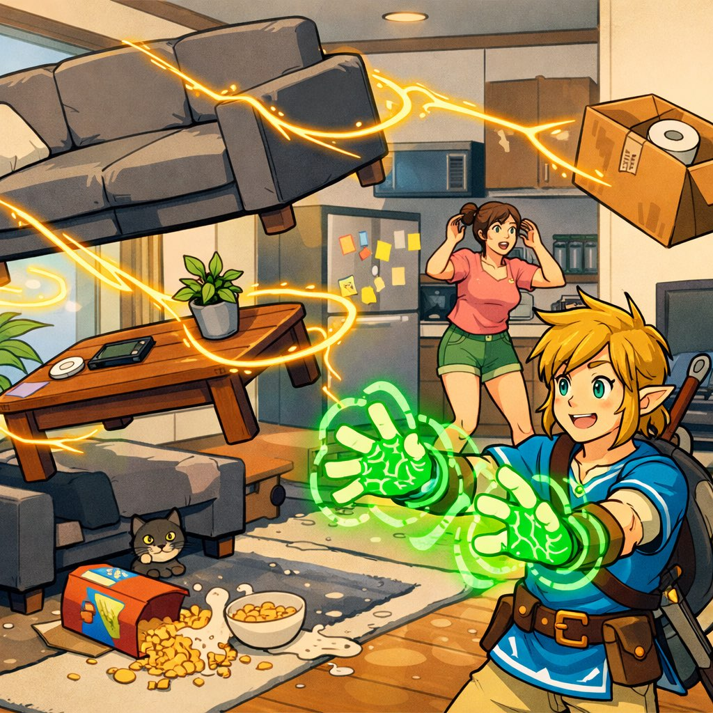
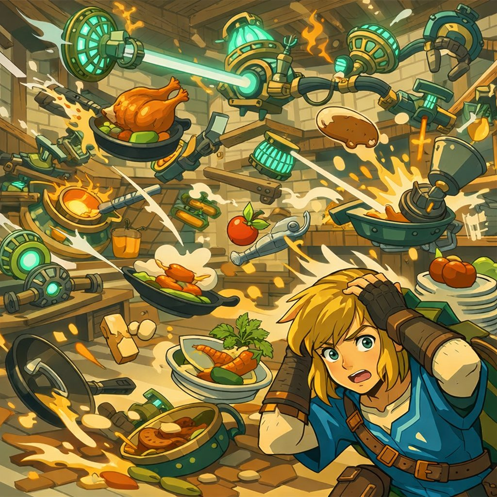
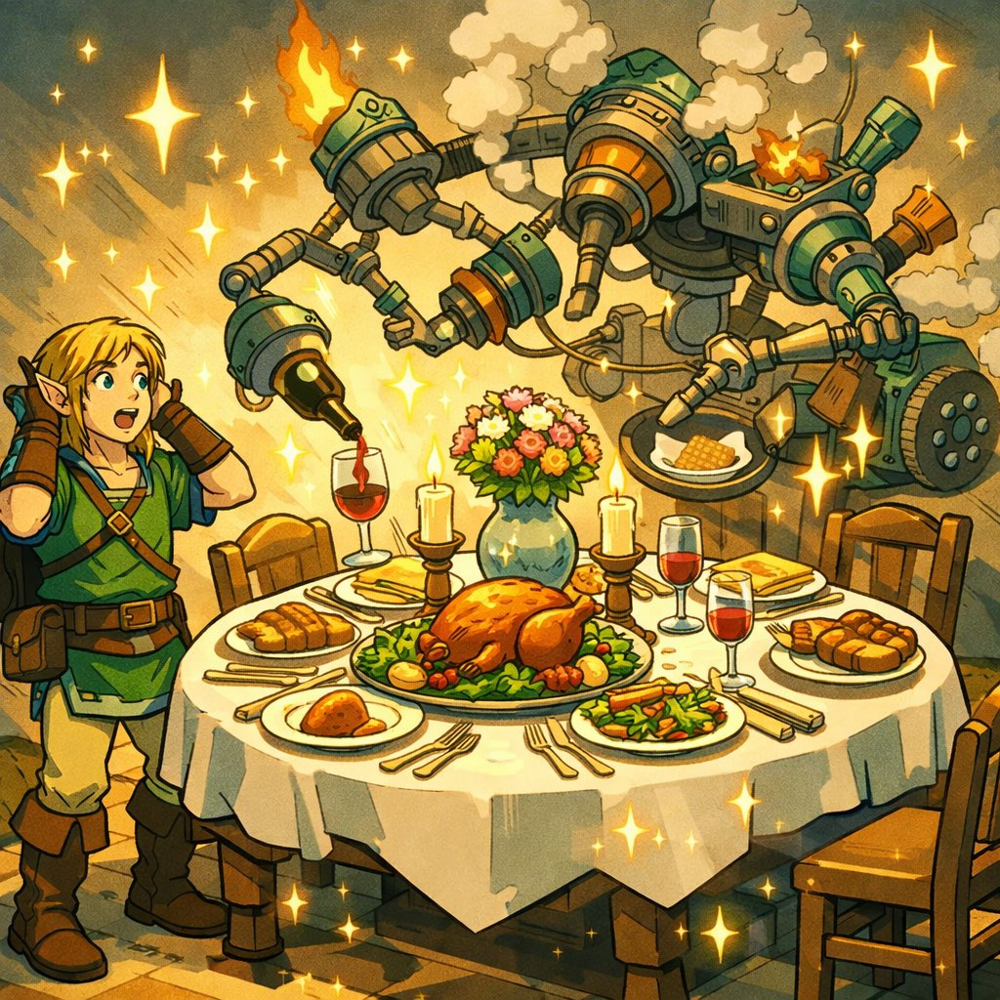

前篇 · 四格漫画

第一格：林克站在一堆家具前发愁。沙发、冰箱、六个箱子——普通人需要叫搬家公司。但他有究极手。
林克
搬家公司要300卢比？我自己来！我可是打败过魔王的男人！💪
第二格：林克激活究极手，绿色光芒包裹住所有家具。他把沙发粘在冰箱上面，冰箱粘在书架侧面，六个箱子围成一圈当轮子。
林克
左纳乌科技の搬家神器——"移动城堡1号"，完成！✨
第三格：他又掏出风扇左纳乌装置，粘在"移动城堡"后面当推进器。
第四格：启动。
嗡嗡嗡嗡———💨
"移动城堡1号"以完全不可控的速度冲出了家门，直直撞向邻居家的栅栏。
沙发飞上了房顶。
冰箱滚进了池塘。
六个箱子像烟花一样散落一地。
邻居从窗户探出头："勇者大人……你能不能用正常方式搬家？"
沙发飞上了房顶。
冰箱滚进了池塘。
六个箱子像烟花一样散落一地。
邻居从窗户探出头："勇者大人……你能不能用正常方式搬家？"
💥🛋️❄️📦🎆
中场 · 失控的壮观

事情彻底失控了。
风扇装置不知道怎么反向启动，开始把散落的家具以螺旋形式吸回来。锅碗瓢盆在空中画出优美的弧线，椅子像卫星一样绕着冰箱公转。
整个海拉鲁村庄的人都跑出来围观。
"这是……艺术？"有人小声说。
风扇装置不知道怎么反向启动，开始把散落的家具以螺旋形式吸回来。锅碗瓢盆在空中画出优美的弧线，椅子像卫星一样绕着冰箱公转。
整个海拉鲁村庄的人都跑出来围观。
"这是……艺术？"有人小声说。
后篇 · 奇迹反转

第一格：林克闭上眼睛，深吸一口气。如果一切都在旋转——那就让它转到正确的位置。他再次激活究极手，给每件家具一个精准的微调。
第二格：沙发从房顶滑下来，稳稳落在新家客厅正中央。
第三格：冰箱从池塘里弹射出来——完美嵌入厨房角落。里面的牛奶居然还没洒。六个箱子按大小顺序叠成了完美的金字塔。
✨ 叮 ✨
第四格：全村人站在新家门口，目瞪口呆。
这不是搬家。这是行为艺术。
林克叉着腰，露出了经典的得意微笑。
这不是搬家。这是行为艺术。
林克叉着腰，露出了经典的得意微笑。
林克
所以你看，根本不需要搬家公司。还省了300卢比 😎
邻居
你修我栅栏的钱是500卢比。
林克
…………
😎➡️😱➡️💸
尾声
夕阳西下，林克坐在新家门口，看着海拉鲁的天际线。
身后是完美摆放的家具（虽然过程很混乱），脚下是刚修好的邻居栅栏（花了他600卢比，因为加了赔偿金）。
他举起一瓶牛奶，对着夕阳说：
"海拉鲁的DIY精神，永不灭。"
身后是完美摆放的家具（虽然过程很混乱），脚下是刚修好的邻居栅栏（花了他600卢比，因为加了赔偿金）。
他举起一瓶牛奶，对着夕阳说：
"海拉鲁的DIY精神，永不灭。"